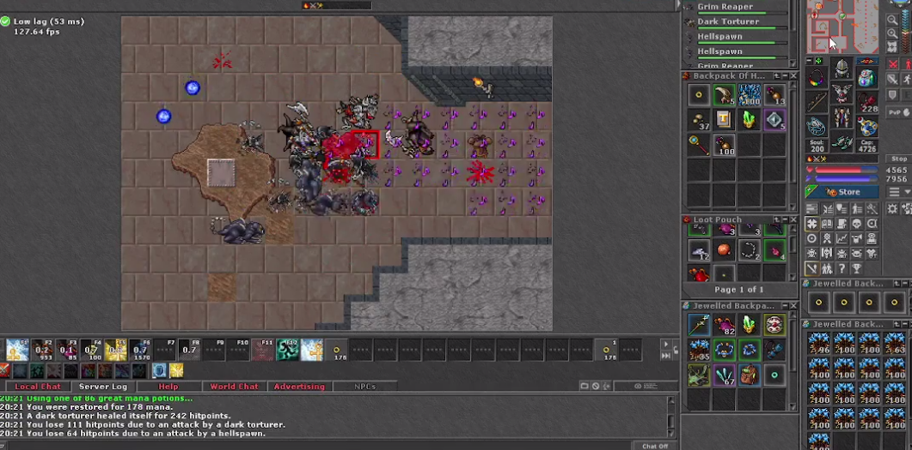

Projetos


WEB SCRAPING
A seguir, colocarei à mostrar 3 dos meus projetos relacionados ao tema.
Projeto 1°
Neste projeto, o seguinte site é acessado (https://www.kraken.com/prices?page=1) para extração de dados. São coletadas as informações de nome, preço e alteração de cada moeda presente no site. Ao término, esses dados são inseridos em um arquivo Excel para posterior tratamento.

A seguir, o projeto em pleno funcionamento.

Após o término da raspagem de dados, a planilha Excel será automaticamente gerada. É importante ressaltar que essa planilha será enviada automaticamente para o endereço de e-mail desejado.

Projeto 2°
Neste projeto, o seguinte site é acessado (https://www.millenamoveiseeletro.com.br/eletrodomesticos) para extração de dados. São coletadas as informações de nome e preço de cada item que existe no site. Ao término, esses dados são inseridos em um arquivo Excel para posterior tratamento.

A seguir, o projeto em pleno funcionamento.

Após o término da raspagem de dados, a planilha Excel será automaticamente gerada. É importante ressaltar que essa planilha será enviada automaticamente para o endereço de e-mail desejado.
Projeto 3°
Neste projeto, o seguinte site é acessado (https://www.atacadao.com.br/mercearia/) para a extração de dados, coletando-se as informações de nome e preço de cada item existente no site. Ao término, esses dados são inseridos em um arquivo Excel para posterior tratamento.

A seguir, o projeto em pleno funcionamento.

Após o término da raspagem de dados, a planilha Excel será automaticamente gerada. É importante ressaltar que essa planilha será enviada automaticamente para o endereço de e-mail desejado.
AUTOMAÇÃO
A seguir, colocarei à mostra todos os meus projetos relevantes atuais relacionados ao tema.
Projeto 1°
A seguir, um pixel bot para o jogo Tibia que opera de maneira completamente autônoma, realizando caça e coleta de loot, entre outras funções.
O Tibia é um jogo que demanda considerável tempo e envolve tarefas massivas. Desenvolvi este bot para atender às necessidades daqueles que adotam um estilo de jogo dedicado à coleta de recursos in-game. Recomendo uma análise técnica mais aprofundada do código por meio do acesso ao meu repositório no GitHub.
O código opera com base no reconhecimento de imagens e utiliza uma thread para monitorar constantemente a vida e a mana do personagem. Quando os valores atingem a porcentagem especificada, o bot realiza ações como curar o personagem, usar poções e executar outras tarefas programadas.